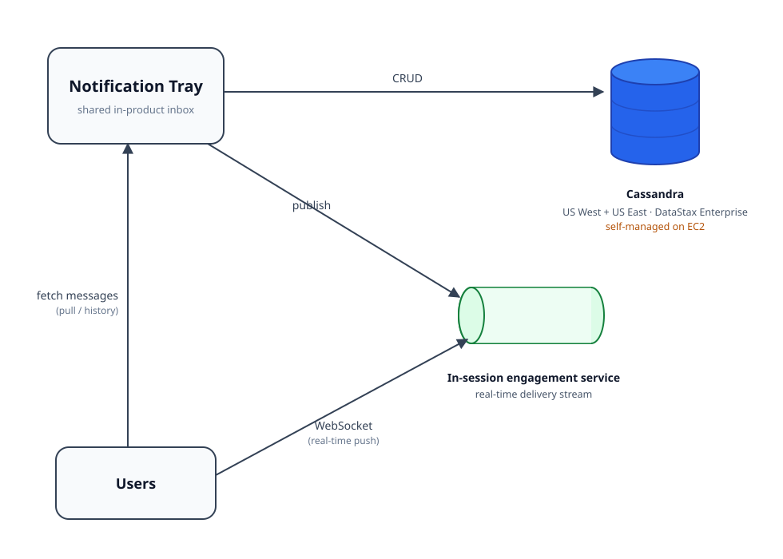

Status: ready
Notification Tray — owning a shared in-product inbox as a platform
Topic · Intuit · Customer Communications platform
What the tray is
The Notification Tray is the in-product inbox in Intuit products — the bell-and-badge surface in QuickBooks, TurboTax, Mailchimp, and a few internal product surfaces. Lots of teams want to drop a message into a user's tray, and the tray is the one system that holds those messages, indexes them, drops duplicates, expires them, and serves them back. It sits on the user-visible path.
Most messages are short-lived, usually a 15-day TTL, and there's tens of GB of live data at any time. Storage is a multi-region Cassandra cluster (US West and US East, DataStax Enterprise) with a Solr index for query. Users get messages two ways. They can pull their history from the tray, and they can receive new messages in real time over a WebSocket, pushed through an in-session engagement service. Storage is the easy part. The hard part is that "a notification" means something slightly different to every team that integrates, and the tray has to serve all of them without turning into a pile of special cases.
I've been the lead and single point of contact for the tray since 2024. Teams come to me to integrate, I own its reliability, and I'm the one pushing on where it should go next.
Why owning a shared inbox is hard
- It's on the user-visible path. When a tray write fails, a customer is missing a message in their inbox. That raises the bar on correctness and on how much availability headroom we keep.
- Every team models notifications differently. One product thinks in per-user alerts, another in broadcast campaigns, another in expert-to-customer threads. The tray has to handle all of that without growing a custom path for each team.
- Identity isn't uniform. Intuit's products don't all share one identity namespace. Mailchimp users, for instance, aren't addressed the same way as Intuit-identity users, so the tray has to figure out who a message is for across more than one scheme.
- The platform is stable, but exposed in one place. Day to day it's steady. The standing risk is that Cassandra runs self-managed on EC2 instead of on a managed service, and that's the piece I've been trying to change for a long time (more below).
The integration model — the real work
Most of what I do for the tray is onboarding new teams onto it, and that's mostly understanding work rather than coding. Every integration tends to go the same way:
- Understand what the team actually wants. What do they mean by a notification? Are these transactional alerts, marketing nudges, expert messages? What's their identity model, their volume, how much latency can they tolerate?
- Figure out how it maps onto the tray. How do their concepts land on the tray's storage, TTL, dedup, and query behavior? The judgment call is finding a mapping that works for them without bolting on a special case that every later integration then has to work around.
- Build it and validate end to end. Sometimes that's new code, sometimes just configuration. Either way it has to be validated on a live, user-facing surface before it ships.
What I've shipped on top of it
- Multi-identity support. Generalized how the tray addresses users so it can serve more than one identity namespace (Mailchimp and Intuit). This is what made it possible to onboard teams outside the original identity model.
- Resilience4j retry layer. Added retries around the Cassandra path so a transient backend hiccup doesn't turn into a missing message for the customer.
- Distributed tracing. Added trace propagation and proper log correlation so you can follow one tray request across services. Before this, a lot of failure reports were just "it broke somewhere," and now they're actually debuggable.

Two delivery paths: a pull path (users fetch message history from the tray) and a real-time push path (WebSocket via the in-session engagement service). Storage is a self-managed, multi-region Cassandra cluster.
Key decisions & trade-offs
- Extend the shared model instead of special-casing. The quick way to onboard a team is to write a custom path for their quirks. I push to extend the shared model instead, the way multi-identity did, because every special case sticks around and the next integration has to deal with it. Trade-off: onboarding takes longer up front, but the platform doesn't rot as more teams pile on.
- Treat retries as a safety net, not a fix. The Resilience4j layer keeps customer impact at zero, but I've been clear that it hides the self-managed-Cassandra fragility rather than fixing it. If you call the retries a solution, you're setting up a nasty surprise the day compaction or load runs past the retry budget. Trade-off: I keep the structural risk on the table even though customers never see the symptom.
- Add traceability before you need it. I added distributed tracing without a specific outage forcing it, just so the next incident would be diagnosable at all. On a shared platform an opaque failure hurts every team at once, so it's worth paying for ahead of time. Trade-off: this work competes with features for time, but it pays off the first time an integration misbehaves.
The structural risk — and the proposal that isn't funded yet
The tray is stable, but it runs on a multi-region Cassandra cluster (DataStax Enterprise) that we operate ourselves on EC2. Self-managing a datastore for a short-TTL, user-visible workload is a lot of operational cost for what we get: the oncall load, the upgrade and compaction tuning, and all the failure modes of running your own distributed database across two regions, all for data that mostly ages out in 15 days.
I've made the case more than once to move the tray off self-managed Cassandra onto a managed NoSQL store. The argument is part cost and part risk.
- The short TTL makes the migration cheap. A long-retention store would need backfill tooling and replay machinery. The tray empties itself in about 15 days, so you can dual-write, cut reads over, and reach a clean state without backfilling any history.
- A managed store takes a whole class of failure modes off our plate, along with the oncall hours that go with them, for a bounded one-time migration.
It hasn't been funded yet. It's competed against other priorities and hasn't won a slot. I'm keeping it on this page on purpose, because spotting the structural risk, scoping the fix, and continuing to push for it is part of owning the platform even when the funding call isn't mine to make. Where it stands today: risk understood, fix scoped, waiting on investment.
Impact
- The tray is a stable, shared platform. It carries the in-product inbox for multiple Intuit products and stayed reliable through TY24 and TY25 peak, with customers never seeing missing messages.
- New teams can onboard cheaply. Integrations land on the shared model rather than as one-off paths, so the cost of taking on each new product stays bounded.
- Recognized across teams for incident leadership and cross-team partnership on customer communications. The citations are on the Recognition page.